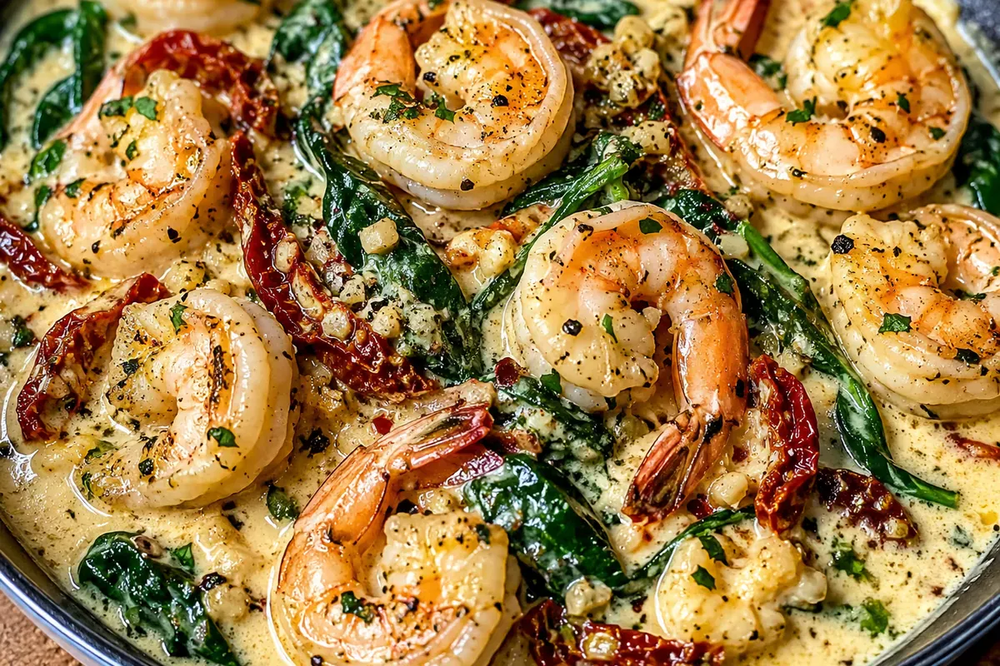

Creamy Tuscan Garlic Shrimp

Creamy Tuscan shrimp is a restaurant-style dinner that comes out of one skillet in about twenty-five minutes. The shrimp are seared quickly and set aside, then a sauce of garlic, sun-dried tomatoes, cream and Parmesan is built in the same pan and finished with spinach.
It serves three generously over pasta or rice, and the sauce is rich enough that a little goes a long way. The key is not to let the cream boil hard, which is what makes it split.
Ingredients
- 1 lb large shrimp, peeled and deveined
- 2 tbsp olive oil
- 4 cloves garlic, minced
- 1/2 cup sun-dried tomatoes, chopped
- 2 cups fresh baby spinach
- 1 cup heavy whipping cream
- 1/2 cup grated Parmesan cheese
- 1 tsp dried Italian seasoning
- Salt and crushed red pepper flakes, to taste
Instructions
- Pat the shrimp dry and season lightly with salt. Heat the olive oil in a large skillet over medium-high heat. Add the shrimp and cook for about 2 minutes per side, until pink and just opaque. Remove them to a plate.
- Lower the heat to medium. Add the garlic and sun-dried tomatoes and cook for about 1 minute, until fragrant.
- Pour in the cream and add the Italian seasoning. Bring to a gentle simmer and cook for about 3 minutes, until it begins to thicken slightly.
- Stir in the Parmesan until melted and smooth, then add the spinach and let it wilt into the sauce.
- Return the shrimp and any juices to the skillet and toss to coat. Warm through for a minute, taste, adjust the seasoning, and add red pepper flakes if you like some heat. Serve hot.
- Shrimp cook fast. Once they curl into a loose C shape and turn pink they are done, and a tight O shape means overcooked.
- Do not crowd the pan. If needed, sear the shrimp in two batches.
- Keep the sauce at a gentle simmer rather than a hard boil to prevent the cream from splitting.
- If the sauce gets too thick, stir in a splash of pasta water, broth or milk.
- A squeeze of lemon just before serving brightens the richness.
- Add 1/4 cup dry white wine or chicken broth after the garlic and let it reduce by half before adding the cream.
- Use chicken breast strips in place of the shrimp.
- Add sliced mushrooms or roasted red peppers.
- Serve over zucchini noodles for a lighter meal.
Why this recipe works
Searing the shrimp first leaves their juices in the pan, which becomes the base of the sauce. Sun-dried tomatoes add sweetness and acidity that balances the cream, and Parmesan thickens the sauce as it melts, so no flour or cornstarch is needed.
Tips for success
- Pat the shrimp dry and season them before searing, so they brown rather than steam.
- Keep the cream at a gentle simmer and stir in the Parmesan off the heat.
- Wilt the spinach in the sauce at the very end, so it keeps its colour.
Substitutions that work
- Half-and-half can replace the heavy cream for a lighter sauce, but keep the heat low so it does not split.
- Chicken breast strips, scallops or firm white fish can stand in for the shrimp, adjusting the cooking time.
- Kale or baby spinach both work; if using kale, add it a minute earlier so it softens.
Storage and make-ahead
Refrigerate for two days. Reheat gently over low heat with a splash of milk or broth, stirring until the sauce loosens. The sauce can split if reheated too quickly, so keep the heat low. Do not freeze.
Serving suggestions
Serve over pasta, rice, polenta or zucchini noodles, with crusty bread for the sauce. A green salad with lemon cuts through the richness.
Frequently asked questions
Why did my cream sauce split?
It boiled too hard or the Parmesan was added over high heat. Keep the sauce at a gentle simmer and stir the cheese in off the burner.
Can I use half-and-half instead of cream?
Yes, but it is more likely to split. Keep the heat low and add the cheese slowly.
Can I make this with chicken?
Yes. Use sliced chicken breast, cook it through first, then follow the same sauce method.